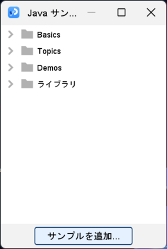
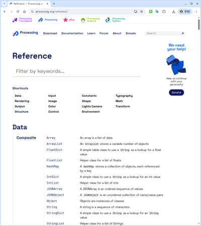

上図は20x10ピクセルを20倍に拡大した
size(400, 200);
教科書は幅800高さ600
上図はポインタの座標が得られるように改変
size(400, 100);
point(200, 50);
line(x1, y1, x2, y2);
rect(x, y, w, h);
triangle(x1, y1, x2, y2, x3, y3);
ellipse(x, y, w, h);
quad(x1, y1, x2, y2, x3, y3, x4, y4);
arc(x, y, w, h, start, stop);
半径1の円の円弧の長さを用いて角度を測定
円周を360等分して角度を測定
size(480, 120);
ellipse(140, 0, 190, 190);
// 長方形は円の上
rect(160, 30, 260, 20);
size(480, 120);
rect(160, 30, 260, 20);
// 円は長方形の上
ellipse(140, 0, 190, 190);
size(200, 200);
/*
fill(0);
fill(255);
*/
ellipse(100, 100, 80, 80);
size(200, 200);
//ellipse(100, 100, 40, 80);
ellipse(100, 100, 80, 40);
size(200, 200);
ellipse(100, 100, 40, 80);
//ellipse(100, 100, 80, 40);
void setup() {
size(256, 256);
}
void draw() {
println(mouseX, mouseY);
}
教科書P56のprintln() (print line)でコンソールに出力可能．